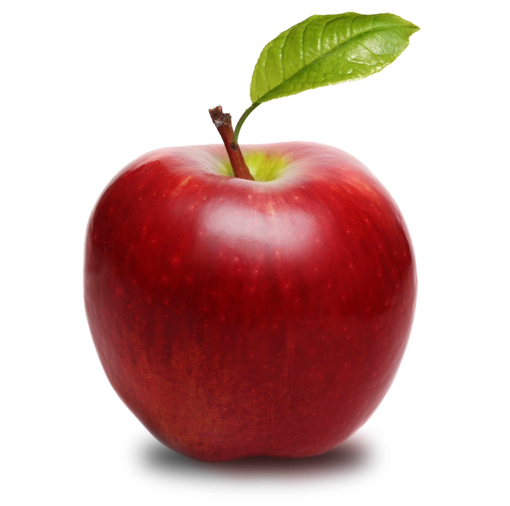
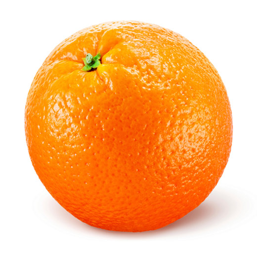
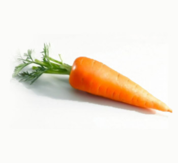

| Name | Description | Weight (kg) | Action | |
| Fruits | ||||
| Apple |  | An apple is a sweet, edible fruit produced by an apple tree (Malus pumila). Apple trees are cultivated worldwide, and are the most widely grown species in the genus Malus. The tree originated in Central Asia, where its wild ancestor, Malus sieversii, is still found today. Apples have been grown for thousands of years in Asia and Europe, and were brought to North America by European colonists. Apples have religious and mythological significance in many cultures, including Norse, Greek and European Christian traditions.
Apple trees are large if grown from seed. Generally apple cultivars are propagated by grafting onto rootstocks, which control the size of the resulting tree. There are more than 7,500 known cultivars of apples, resulting in a range of desired characteristics. Different cultivars are bred for various tastes and uses, including cooking, eating raw and cider production. Trees and fruit are prone to a number of fungal, bacterial and pest problems, which can be controlled by a number of organic and non-organic means. In 2010, the fruit's genome was sequenced as part of research on disease control and selective breeding in apple production. Worldwide production of apples in 2014 was 84.6 million tonnes, with China accounting for 48% of the total. |
1 | |
| Orange |  | The orange is the fruit of the citrus species Citrus × sinensis in the family Rutaceae.[1] It is also called sweet orange, to distinguish it from the related Citrus × aurantium, referred to as bitter orange. The sweet orange reproduces asexually (apomixis through nucellar embryony); varieties of sweet orange arise through mutations.[2][3][4][5]
The orange is a hybrid between pomelo (Citrus maxima) and mandarin (Citrus reticulata).[2][6] The chloroplast genome, and therefore the maternal line, is that of pomelo.[7] The sweet orange has had its full genome sequenced.[2] Sweet oranges were mentioned in Chinese literature in 314 BC.[2] As of 1987, orange trees were found to be the most cultivated fruit tree in the world.[8] Orange trees are widely grown in tropical and subtropical climates for their sweet fruit. The fruit of the orange tree can be eaten fresh, or processed for its juice or fragrant peel.[9] As of 2012, sweet oranges accounted for approximately 70% of citrus production.[10] In 2014, 70.9 million tonnes of oranges were grown worldwide, with Brazil producing 24% of the world total followed by China and India. |
0.7 | |
| Vegetables | ||||
| Carrot |  | The carrot (Daucus carota subsp. sativus) is a root vegetable, usually orange in colour, though purple, black, red, white, and yellow cultivars exist.[1] Carrots are a domesticated form of the wild carrot, Daucus carota, native to Europe and southwestern Asia. The plant probably originated in Persia and was originally cultivated for its leaves and seeds. The most commonly eaten part of the plant is the taproot, although the stems and leaves are eaten as well. The domestic carrot has been selectively bred for its greatly enlarged, more palatable, less woody-textured taproot.
The carrot is a biennial plant in the umbellifer family Apiaceae. At first, it grows a rosette of leaves while building up the enlarged taproot. Fast-growing cultivars mature within three months (90 days) of sowing the seed, while slower-maturing cultivars are harvested four months later (120 days). The roots contain high quantities of alpha- and beta-carotene, and are a good source of vitamin K and vitamin B6, but the belief that eating carrots improves night vision is a myth put forward by the British in World War II to mislead the enemy about their military capabilities. The United Nations Food and Agriculture Organization (FAO) reports that world production of carrots and turnips (these plants are combined by the FAO) for the calendar year 2013 was 37.2 million tonnes; almost half (~45%) were grown in China. Carrots are widely used in many cuisines, especially in the preparation of salads, and carrot salads are a tradition in many regional cuisines. |
0.3 | |